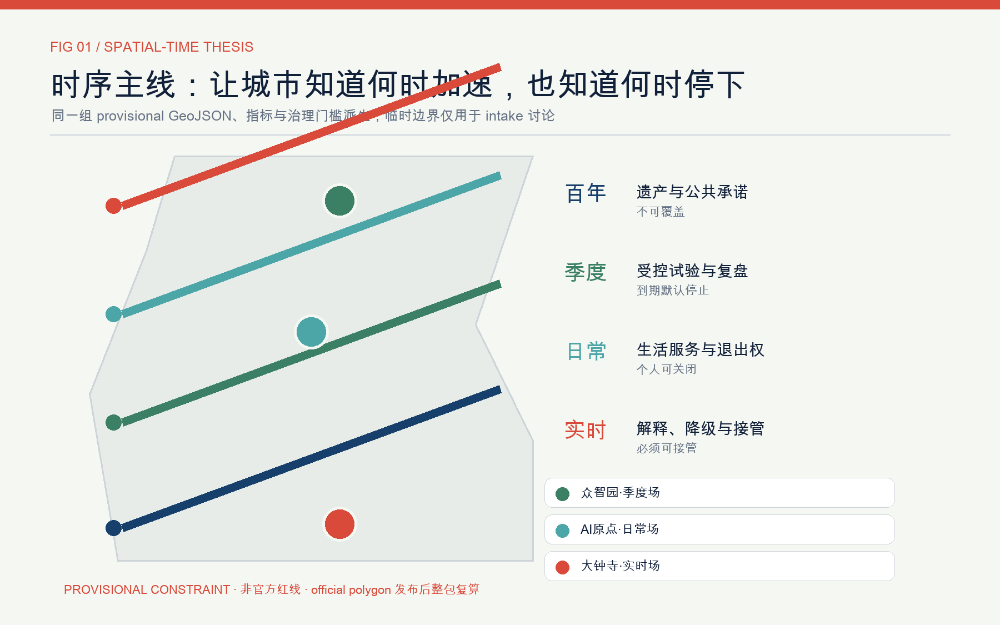

众智园 · 季度场
训练—评测—试验—复盘。场景到期默认停止。
一条时序主线、三座节奏场、两翼交换窗、十二个时盒。让城市知道何时加速，也知道何时暂停、复核与回滚。
本展示使用 provisional boundary；非官方红线，不用于审批、精确面积、法定控制或工程线位。official polygons 发布后整包复算。
训练—评测—试验—复盘。场景到期默认停止。
学习—生活—协作—转化。个人可以关闭算法服务。
展示—降级—接管—复原。状态必须可见。

统筹研究范围用于产业与未来城市研究；总体设计范围用于城市更新与控规深度设计；重点区域范围用于三处详细设计。设计层包括 land_use、buildings、roads、green_space、public_space 与 phasing。
季度 · 版本、期限、负责人、到期停止
季度 · 低速、可绕行、现场接管
季度 · 能耗口径与异常降级
日常 · 匿名计数与人工踏勘
实时 · 正常、降级、接管三态
百年 · 雨洪、热舒适、生境
日常 · 可更正、可撤回、可追踪
日常 · AI 导航、复杂事项转人工
实时 · 工程线位待专业复核
百年 · 史实来源核验
日常 · 无推荐、无追踪、服务兜底
年度 · 活动另行审批
空间权威层
面积与比例复算
任务、标准、深度
人类解释层
校验与版本归档
自检状态以 self_check.json 与本地校验输出为准。来源见 sources.json；假设见 assumptions.json。当前 official boundary、控规、道路红线、权属、市政、文保与公共服务底数仍待补齐。